Entramos en server management
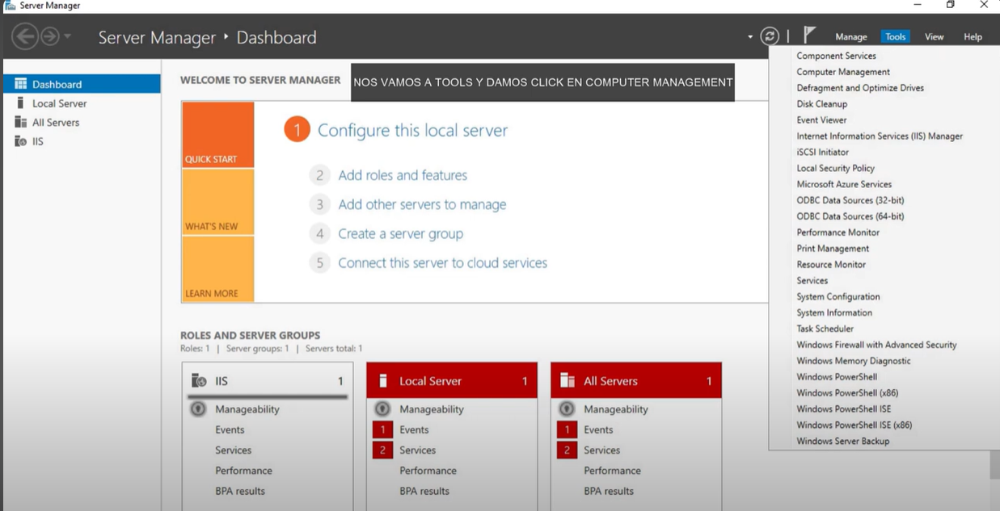Tools y computer management
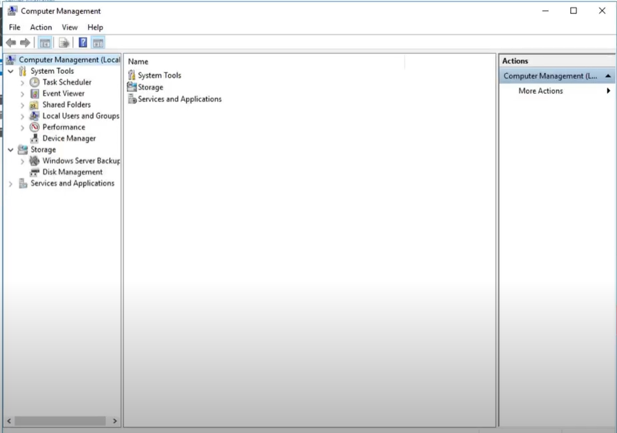Entramos en local users and Groups
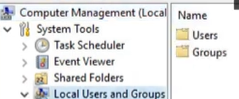Creamos un usuario invitado en Users
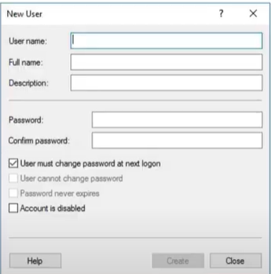Llenamos los campos y deseleccionamos la primer casilla y seleccionamos la segunda y daremos create
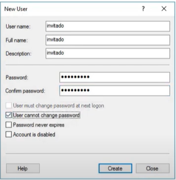En la carpeta documento crearemos una carpeta llamada compartida
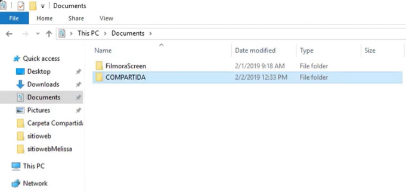En server management ingresamos a file and storage services y despues a volumes
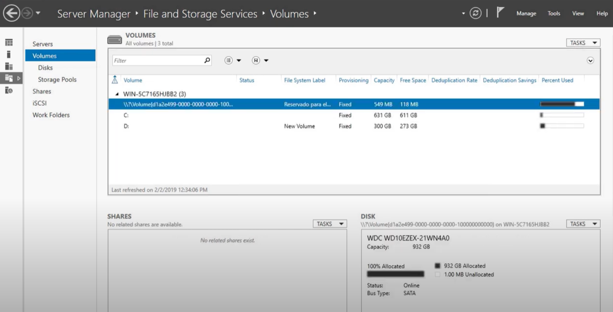Entamos en shares y creamos una nueva task
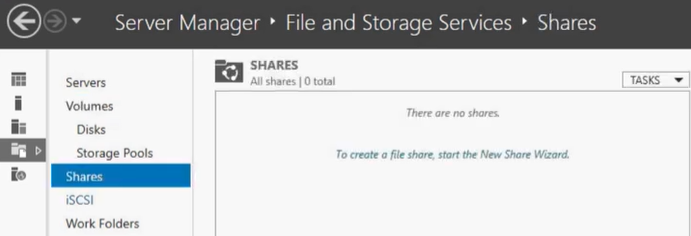Daremos click en next

En share location seleccionamos Custom path y buscamos nuestra carpeta
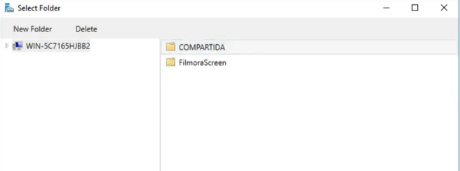Verificamos que los parametros esten correctos y daremos next
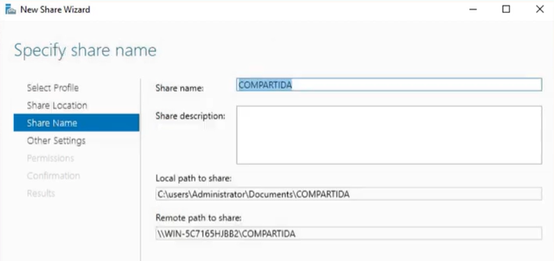Seleccionamos la primer opcion

Damos en customize permissions
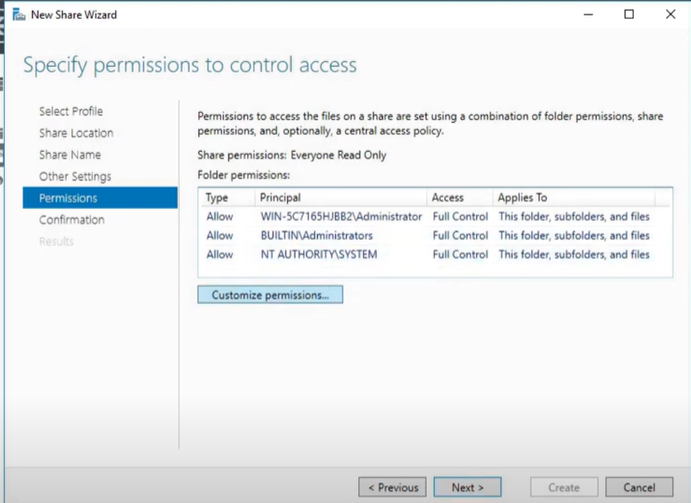Agregamos un nuevo usuario
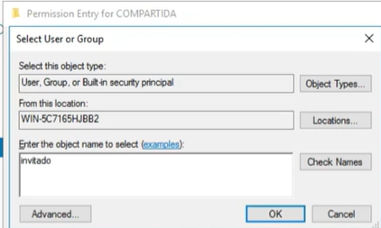Le damos los permisos necesarios

Verificamos los parametros
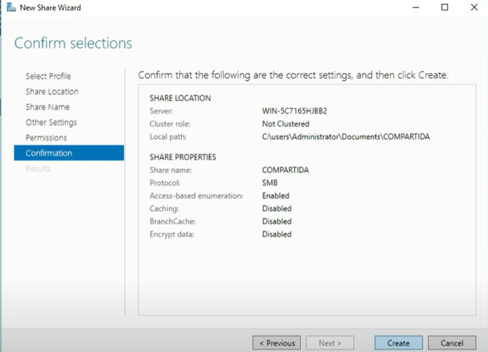AVerificamos que nos aparezca la carpeta
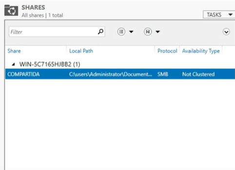En el cliente ingresamos la ip del dervidor y la carpeta y nos pedira el usuario y contraseña que ingresamos al inicio

En el cliente podremos ver los archivos en la carpeta